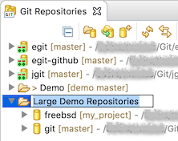
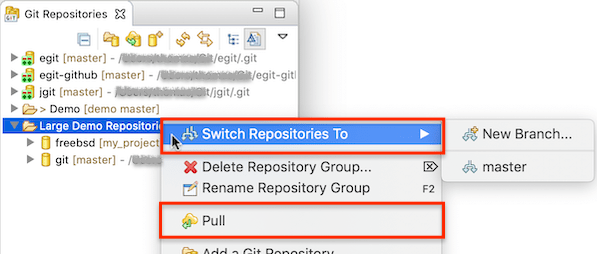
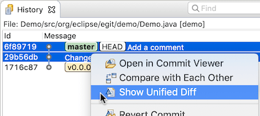
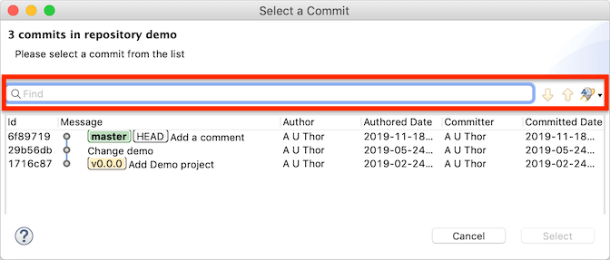

| EGit 5.7 New and Noteworthy | ||
|---|---|---|
|
|
||
| Contributors | ||
When a repository group is renamed in the Git Repositories view, a border is drawn around the editor inside the tree for better visual identification of the rename operation:

Some commands that can work on multiple repositories have been enabled on repository groups. The context menu on a repository group now also has the Pull and Switch Repositories To commands.

Pull pulls all repositories contained in the group. Switch Repositories To allows the user to do a branch switch in all repositories, provided there is a local branch with a name common between them all. Both commands were already available if multiple repositories were selected; newly they are also active when repository groups are selected.
Switch Repositories To→New Branch... creates a new local branch at the current HEAD in all the selected repositories.
There is a new command Show Unified Diff available when two commits or branches or tags from the same repository are selected.

The command opens a diff viewer in the editor area of Eclipse showing the unified diff with the older commit as base. This diff viewer already existed in the Commit Viewer, "Diff" tab, where it showed the unified diff of the commit against its parent. This viewer is now available stand-alone, and can show the diff between any two commits.
This is a read-only editor; many editor commands such as Find... are enabled. Save is disabled, but Save As... is available.
It is now possible to compare two branches or tags in the Git Repositories view via the commands formerly available only in the Git History view: Compare with Each Other, Compare in Tree, and the new Show Unified Diff.
The commit selection dialog openend from the Compare With→Commit... command now allows the user to search in the commit list using the same UI as in the Git History view.

The org.eclipse.egit.ui bundle has a new public API: it provides a public
IAdapterFactory that can be used to define an input for the Git History page. This is useful for Eclipse bundles that have their own objects that correspond to some Git repository, commit, or branch and that want to make the Git History page show that repository or commit when such an object is selected. To use it, include an
adapter definition in your bundle's plugin.xml as follows:
<extension point="org.eclipse.core.runtime.adapters">
<factory
adaptableType="org.example.myproduct.gitobjects.MyGitObject"
class="org.eclipse.egit.ui.history.GitHistoryAdapterFactory">
<adapter type="org.eclipse.team.ui.history.IHistoryPageSource" />
</factory>
</extension>
The adaptableType objects (MyGitObject in the example) also need to be adaptable to org.eclipse.jgit.lib.Repository, and optionally to org.eclipse.jgit.revwalk.RevCommit. The Git History view, if set to follow the selection in other views, will then show the history of that repository whenever the current selection is a MyGitObject.
org.eclipse.egit.ui.history.GitHistoryAdapterFactory. Adaptation to IHistoryPageSource
will be removed from the internal factory in the next EGit release.
EGit 5.7 includes lots of less noticeable improvements in the UI, plus a number of bug fixes. The complete list of new features and bug fixes is available in the release notes.
|
|
||
| Contributors |